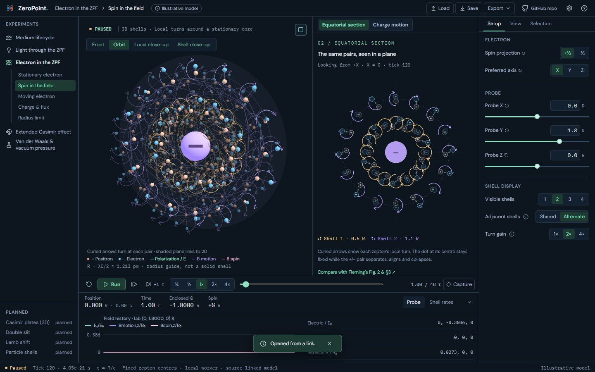
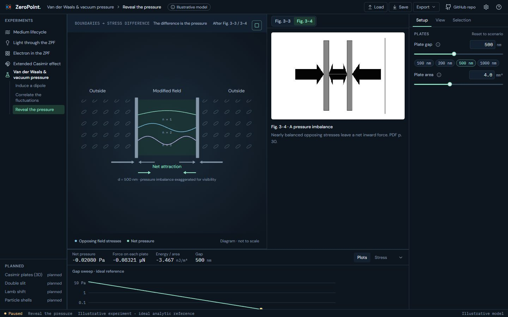
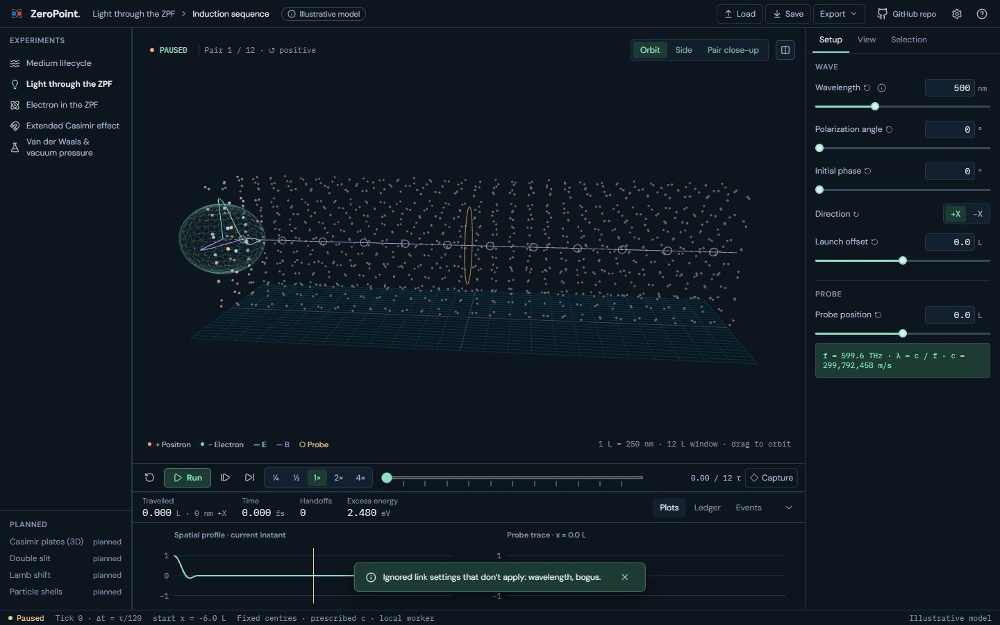

UI 16a · Links to a lab's state: before and after
The address bar now names the visible lab and scenario and whatever differs from that scenario's start: settings, layers, camera, split pane and (for Light and Electron, which can seek) the time, e.g. #/electron/spin?axis=x&cam=orbit&t=120&L=+radius. It updates as you work (debounced, never while running), without adding history entries. Opening such a link, or editing the hash, opens that lab in that state; values are checked against the lab's definition and anything that doesn't apply is dropped with a notice. Ctrl Shift C (or Copy link in the palette) copies the current link. Before this layer, the app ignored the hash and always opened Medium.
Real screens: "before" runs the layer below, and "after" runs this layer. Click an image to open it at full size. Regenerate with node scripts/compare-screens.mjs --before ../15b-palette --out docs/ui-previews/16a-url-state --set links --title 'UI 16a · Links to a lab'\''s state' --description 'The address bar now names the visible lab and scenario and whatever differs from that scenario'\''s start: settings, layers, camera, split pane and (for Light and Electron, which can seek) the time, e.g. #/electron/spin?axis=x&cam=orbit&t=120&L=+radius. It updates as you work (debounced, never while running), without adding history entries. Opening such a link, or editing the hash, opens that lab in that state; values are checked against the lab'\''s definition and anything that doesn'\''t apply is dropped with a notice. Ctrl Shift C (or Copy link in the palette) copies the current link. Before this layer, the app ignored the hash and always opened Medium.'.
Electron · #/electron/spin?axis=x&cam=orbit&t=120&L=+radius



Van der Waals · #/vdw/pressure?area=4&gap=500&split=fig-3-4



Light · #/light?wavelength=9&bogus=1 (settings that don’t apply are dropped, with a notice)


